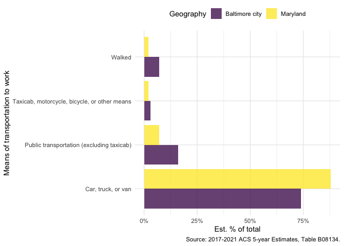

The goal of getACS is to make it easier to work with American Community Survey data from the tidycensus package. The package includes:
- Helpers for creating tables of ACS data using the gt package
- Helpers that extend the existing
tidycensus::get_acs()function to work with multiple years or geographies
Note that I don’t love the current name for this package and expect to rename it as soon as I think of a better one.
Installation
You can install the development version of getACS from GitHub with:
# install.packages("pak")
pak::pkg_install("elipousson/getACS")Usage
The main feature of getACS is support for returning multiple tables, geographies, and years.
acs_data <- get_acs_geographies(
geography = c("county", "state"),
county = "Baltimore city",
state = "MD",
table = c("B08134"),
quiet = TRUE
)
#> [1] "county" "state"The package also includes utility functions for filtering data and selecting columns to support the creation of tables using the gt package:
tbl_data <- filter_acs(acs_data, indent == 1, line_number <= 10)
tbl_data <- select_acs_cols(tbl_data)
commute_tbl <- gt_acs(
tbl_data,
groupname_col = "NAME",
column_title_label = "Commute time",
table = "B08134"
)
as_raw_html(commute_tbl)| Commute time | Est. | % share |
|---|---|---|
| Baltimore city, Maryland | ||
| Maryland | ||
| Source: 2017-2021 ACS 5-year Estimates, Table B08134. | ||
The package also includes several simple functions to support creating plots with the ggplot2 package:
plot_data <- filter_acs(acs_data, indent == 1, line_number > 10)
plot_data <- select_acs_cols(plot_data)
plot_data |>
fmt_acs_county(state = "Maryland") |>
ggplot(aes(x = perc_estimate, y = column_title, fill = NAME)) +
geom_col(position = "dodge", alpha = 0.75) +
scale_x_acs_percent() +
scale_fill_viridis_d() +
theme_minimal() +
theme(legend.position = "top") +
labs_acs_survey(
y = "Means of transportation to work",
fill = "Geography",
table = acs_data$table_id[[1]]
)